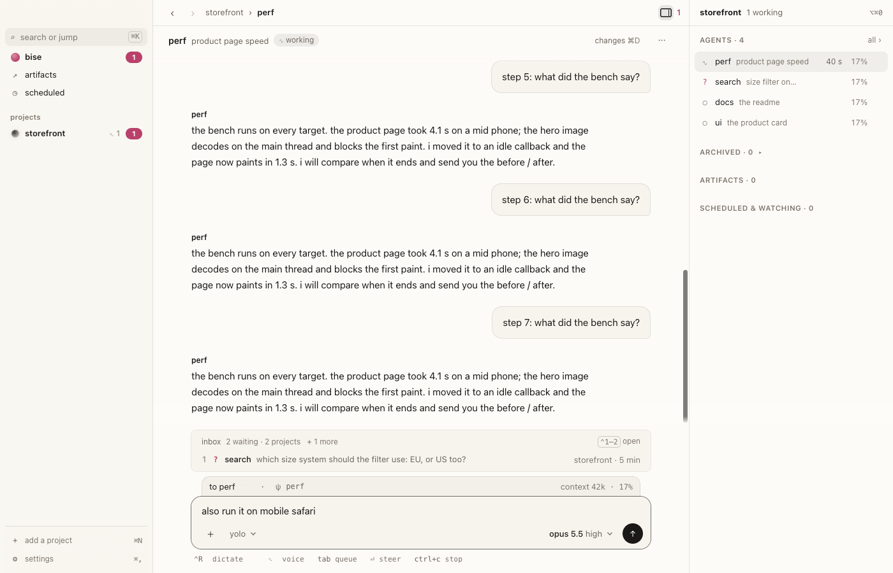
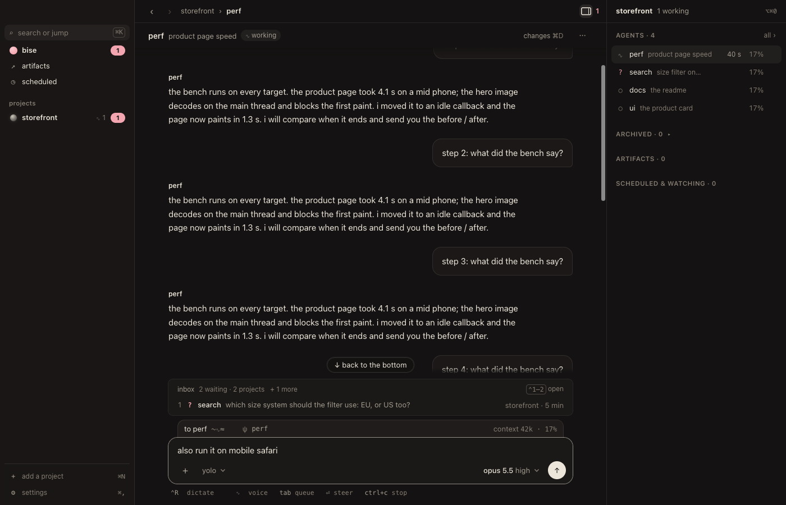

bise for Mac
the same bise,
in a window.
one thread per repo. the agents on the right. a notification only when something needs you. your agents keep working when the window is closed.
download for Mac
bise for Mac runs on a Mac. open bise.dev/download there, or send yourself the link.
signed and notarized by Apple · or the beta, or the terminal app
this Mac may have an Intel chip: bise for Mac needs Apple silicon. the terminal app runs on both.
bise for Mac isn't out yet. the terminal app is, and it's the same bise: same agents, same pages.
$ curl -fsSL bise.dev/install | shcopy
bise is coming down as bise-mac-arm64.dmg. then:
- 1open it from your Downloads.
- 2drag bise to Applications.
- 3open bise from Applications.macOS asks once if you want to open an app from the internet: Open. then say what's on your mind.
nothing came down? download it again
bise


search needs youwhich size system should the filter use: EU, or US too?